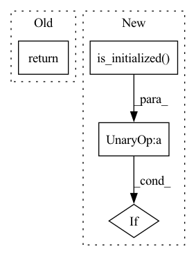

Pattern ID :15244
Before Change
def get_rank():
if not torch.distributed.is_initialized():
return 0
return torch.distributed.get_rank()
def is_main_process():After Change
def get_rank():
if not dist.is_available():
return 0
if not dist.is_initialized() :
return 0
return dist.get_rank()
In pattern: SUPERPATTERN
Frequency: 6
Non-data size: 4
Instances Fragment ID: 51437816
Project Name: zqpei/dssd
Commit Name: 81ec279cfe4e0dd90a1e2714bd637e273d74aa77
Time: 2019-04-29
Author: luffy.lcc@gmail.com
File Name: ssd/utils/distributed_util.py
M Class Name: AnonimousClass
N Class Name: AnonimousClass
M Method Name: get_rank(0)
N Method Name: get_rank(0)
M Parent Class:
N Parent Class:
M File Name: ssd/utils/distributed_util.py
N File Name: ssd/utils/distributed_util.py
M Start Line: 16
M End Line: 18
N Start Line: 16
N End Line: 20
Before Change
def get_world_size():
if not torch.distributed.is_initialized():
return 1
return torch.distributed.get_world_size()
def get_rank():After Change
def get_world_size():
if not dist.is_available():
return 1
if not dist.is_initialized() :
return 1
return dist.get_world_size()
Fragment ID: 51437817
Project Name: zqpei/dssd
Commit Name: 81ec279cfe4e0dd90a1e2714bd637e273d74aa77
Time: 2019-04-29
Author: luffy.lcc@gmail.com
File Name: ssd/utils/distributed_util.py
M Class Name: AnonimousClass
N Class Name: AnonimousClass
M Method Name: get_world_size(0)
N Method Name: get_world_size(0)
M Parent Class:
N Parent Class:
M File Name: ssd/utils/distributed_util.py
N File Name: ssd/utils/distributed_util.py
M Start Line: 10
M End Line: 12
N Start Line: 8
N End Line: 12
Before Change
return new_module
return replace_module(model=model,
orig_class=orig_layer_impl,
replace_fn=replace_fn,
_replace_policy=policy)After Change
if checkpoint is not None:
for i in range(len(checkpoint)):
if not deepspeed.comm.is_initialized() or deepspeed.comm.get_rank() == 0:
print(f"loading checkpoint ({i})")
sd = torch.load(checkpoint[i], map_location="cpu")
load_model_with_checkpoint(replaced_module, sd, mp_replace) Fragment ID: 51437819
Project Name: microsoft/deepspeed
Commit Name: aa88137b8d093f222f6c925d70b68024ae26ef0c
Time: 2022-07-18
Author: 44502768+RezaYazdaniAminabadi@users.noreply.github.com
File Name: deepspeed/module_inject/replace_module.py
M Class Name: AnonimousClass
N Class Name: AnonimousClass
M Method Name: replace_transformer_layer(28)
N Method Name: replace_transformer_layer(27)
M Parent Class:
N Parent Class:
M File Name: deepspeed/module_inject/replace_module.py
N File Name: deepspeed/module_inject/replace_module.py
M Start Line: 629
M End Line: 632
N Start Line: 150
N End Line: 773
Before Change
self.init_process_group(backend, timeout, init_method)
def init_process_group(self, backend, timeout, init_method):
return torch.distributed.init_process_group(backend,
timeout=timeout,
init_method=init_method)
After Change
self.init_process_group(backend, timeout, init_method)
def init_process_group(self, backend, timeout, init_method):
if not torch.distributed.is_initialized() :
torch.distributed.init_process_group(backend,
timeout=timeout,
init_method=init_method) Fragment ID: 51437820
Project Name: microsoft/deepspeed
Commit Name: 9f5895cb7a7db8248295038543d75a4334ee5c44
Time: 2022-07-21
Author: qganthony@yahoo.com
File Name: deepspeed/comm/torch.py
M Class Name: TorchBackend
N Class Name: TorchBackend
M Method Name: init_process_group(4)
N Method Name: init_process_group(4)
M Parent Class: Backend
N Parent Class: Backend
M File Name: deepspeed/comm/torch.py
N File Name: deepspeed/comm/torch.py
M Start Line: 38
M End Line: 40
N Start Line: 38
N End Line: 43
Before Change
if device.type == "cuda":
torch.cuda.set_device(device)
return device, n_gpuAfter Change
else:
// Here, we"ll use torch.distributed.
// Initializes the distributed backend which will take care of sychronizing nodes/GPUs
if not torch.distributed.is_initialized() :
torch.distributed.init_process_group(backend="nccl", timeout=self.ddp_timeout_delta)
device = torch.device("cuda", self.local_rank)
self._n_gpu = 1 Fragment ID: 51437821
Project Name: georgianpartners/multimodal-toolkit
Commit Name: 129c44138e53b3d576e16e588e6fd0d9ceec243a
Time: 2023-03-01
Author: akash.saravanan@georgian.io
File Name: multimodal_exp_args.py
M Class Name: OurTrainingArguments
N Class Name: OurTrainingArguments
M Method Name: _setup_devices(1)
N Method Name: _setup_devices(1)
M Parent Class: TrainingArguments
N Parent Class: TrainingArguments
M File Name: multimodal_exp_args.py
N File Name: multimodal_exp_args.py
M Start Line: 194
M End Line: 214
N Start Line: 194
N End Line: 219